Documentación Oficial de Operación y Uso
Manual de Usuario
Guía integral del Portal Web Público y Panel Administrativo de RE/MAX Zona Inmobiliaria: consulta de catálogo inmobiliario, gestión de propiedades, directorio de agentes, ranking mensual, sedes regionales y seguridad de cuentas.
Información del Documento
Control Documental y Tabla de Contenidos
Ficha Técnica del Documento
| Código del documento | MAN-USR-RZ-001 |
Versión | 1.0 |
|---|---|---|---|
| Sistema documentado | Portal Web y Panel Administrativo RE/MAX Zona Inmobiliaria | Fecha de emisión | Noviembre 2026 |
| Público objetivo | Visitantes, Equipo de Marketing, Administradores y Soporte Técnico | Clasificación | Uso Institucional y Operativo |
| Plataforma tecnológica | Laravel + Livewire + MySQL (Interfaz Web Responsiva WCAG 2.1 AA) | Idioma / Zona horaria | Español (PE) / America/Lima |
Historial de Revisiones
| Versión | Fecha | Responsable | Descripción del cambio |
|---|---|---|---|
| 1.0 | Noviembre 2026 | Equipo de Proyecto RE/MAX Zona | Emisión inicial del manual de usuario completo con capturas reales del sistema, diagramas operativos, matriz de permisos, diccionario de campos y guía de seguridad 2FA. |
Tabla de Contenidos
Parte I — Fundamentos y Sitio Público
- 1. Introducción, Requisitos y Convenciones
- 2. Guía del Sitio Web Público
- 2.1 Navegación global, pie de página y WhatsApp
- 2.2 Página de Inicio (
/) - 2.3 Empresa y Directorio de Agentes (
/empresa) - 2.4 Catálogo General de Propiedades (
/propiedades) - 2.5 Oficinas y Catálogo por Sede (
/oficinas) - 2.6 Página de Contacto (
/contacto)
Parte II — Panel Administrativo y Soporte
- 3. Acceso, Seguridad (2FA) y Roles del Panel
- 4. Módulos Operativos (Propiedades, Agentes, Ranking)
- 5. Módulos Exclusivos del Administrador
- 5.1 Portada Principal • 5.2 Oficinas • 5.3 Historial
- 5.4 Contacto Global • 5.5 Usuarios y Roles
- 6. Mi Cuenta, Apariencia y Seguridad Personal
- 7. Preguntas Frecuentes y Solución de Problemas
- 8. Glosario de Términos y Anexo Técnico
Índice de Figuras
- Figura 1. Portada principal (Hero) de Inicio
- Figura 2. Sección de Propiedades Destacadas
- Figura 3. Página Empresa e Identidad Corporativa
- Figura 4. Directorio público de agentes inmobiliarios
- Figura 5. Catálogo general con filtros en tiempo real
- Figura 6. Directorio de las cuatro sedes oficiales
- Figura 7. Catálogo filtrado por oficina (Arequipa)
- Figura 8. Página de Contacto y canales oficiales
- Figura 9. Pantalla de inicio de sesión administrativo
- Figura 10. Gestión de Propiedades (listado principal)
- Figura 11. Editor lateral maestro-detalle de Propiedad
- Figura 12. Gestión de Agentes y zona de carga de foto
- Figura 13. Módulo de Gestión del Ranking Mensual
- Figura 14. Configuración de Portada Principal
- Figura 15. Gestión de las cuatro Oficinas Oficiales
- Figura 16. Historial de Rankings Mensuales (solo lectura)
- Figura 17. Configuración de Información Global de Contacto
- Figura 18. Gestión de Usuarios y Roles
- Figura 19. Configuración de Perfil de Usuario
- Figura 20. Apariencia del Panel (Modo Claro)
- Figura 21. Apariencia del Panel (Modo Oscuro)
- Figura 22. Seguridad de la Cuenta (Contraseña y 2FA)
Capítulo 1
Introducción, Requisitos y Convenciones
1.1 Propósito del sistema
La plataforma web de RE/MAX Zona Inmobiliaria centraliza la presencia digital de la empresa y permite administrar de forma ágil y segura su oferta inmobiliaria en el sur del Perú y Lima. Se compone de dos entornos integrados sobre una misma base de datos en tiempo real:
- Sitio Web Público: Portal abierto al público para explorar propiedades filtrables por texto, ubicación, moneda u oficina, consultar los vendedores destacados del mes, conocer al directorio oficial de agentes y contactar por teléfono, correo o WhatsApp.
- Panel Administrativo (Intranet): Consola privada protegida por credenciales, control de roles (
ADMINISTRADORyMARKETING) y autenticación opcional en dos pasos (2FA), donde el equipo publica, actualiza y supervisa todo el contenido del portal sin requerir conocimientos de programación.
1.2 Requisitos técnicos y accesibilidad
| Aspecto | Requisito o característica soportada |
|---|---|
| Navegadores compatibles | Versiones actuales de Google Chrome, Microsoft Edge, Mozilla Firefox y Apple Safari (escritorio, tableta y móvil). |
| JavaScript y Cookies | Habilitados para el filtrado instantáneo del catálogo, vistas previas de imágenes y operaciones Livewire del panel. |
| Accesibilidad (WCAG 2.1 AA) | Navegación íntegra mediante teclado (Tab, Shift+Tab, Enter, Espacio), enlace rápido «Saltar al contenido», indicadores visuales de enfoque, contraste verificado y compatibilidad con lectores de pantalla. |
| Optimización automática | Toda fotografía subida desde el panel (JPG, JPEG, PNG o WebP hasta 4 MB) se optimiza automáticamente generando una copia ligera en formato WebP sin perder el archivo original. |
1.3 Convenciones visuales de este manual
Para facilitar la lectura rápida durante la operación diaria, en este manual se utilizan las siguientes convenciones:
Acción principal en pantalla.
Dirección URL directa del módulo.
Capítulo 2
Guía del Sitio Web Público
El sitio público está diseñado para que cualquier cliente interesado en comprar, vender, alquilar o invertir encuentre rápidamente propiedades, oficinas y asesores autorizados.
Diagrama 1. Estructura general de navegación del Sitio Web Público de RE/MAX Zona.
2.1 Navegación global, pie de página y botón flotante de WhatsApp
En la parte superior e inferior de todas las páginas públicas permanecen visibles:
- Encabezado institucional: Logotipo RE/MAX Zona (regresa a Inicio) y enlaces directos a Inicio, Empresa, Propiedades, Oficinas y Contacto. La sección activa se resalta en amarillo corporativo.
- Pie de página (Footer): Muestra el nombre comercial, dirección/cobertura, teléfono cliqueable (
tel:), correo (mailto:), acceso a WhatsApp directo y horarios de atención de lunes a viernes y sábados. - Botón flotante «💬 WhatsApp»: Fijo en la esquina inferior derecha para abrir una conversación directa con la central de atención desde cualquier punto de la navegación.
2.2 Página de Inicio /
Es la carta de presentación del portal y se organiza en cuatro bloques verticales:
- Portada Principal (Hero): Exhibe la fotografía panorámica administrable desde el panel, el mensaje principal «Encuentra tu propiedad ideal» y el botón Ver propiedades que desplaza directamente al catálogo destacado.
- Nuestros Destacados (Podio Mensual): Presenta a los 3 vendedores estrella del mes (1.er, 2.º y 3.er puesto) con fotografía especial, nombre y enlace a su WhatsApp. Si el ranking del mes actual aún no se ha publicado, se muestra automáticamente el mensaje «Ranking mensual en actualización. Pronto conocerás a nuestros vendedores destacados del mes».
- Propiedades Destacadas: Muestra únicamente los inmuebles activos marcados con estrella (
★) en el panel administrativo, con su foto, título, ubicación, precio (cuando está registrado) y enlace Más información → hacia su ficha oficial en RE/MAX Perú. - Llamado a la acción «Trabaja con nosotros»: Botón Postular por WhatsApp conectado al número de reclutamiento configurado en Contacto Global.
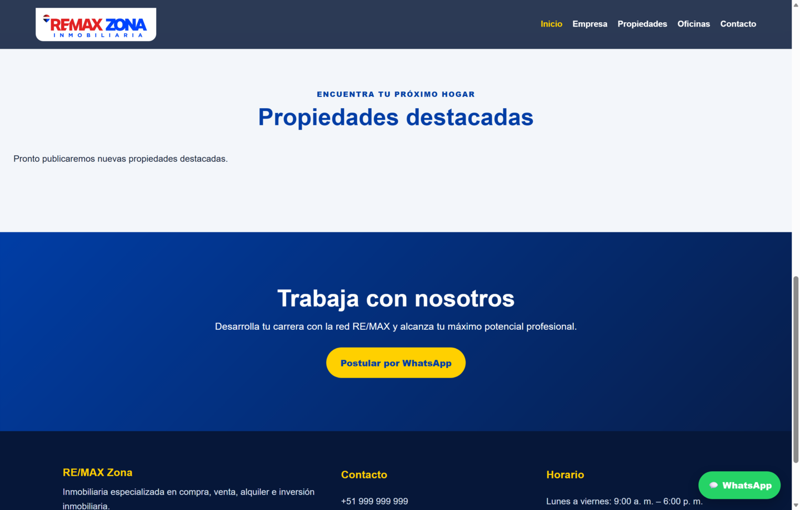
2.3 Página Empresa y Directorio de Agentes /empresa
Reúne la identidad institucional y el equipo comercial oficial de RE/MAX Zona:
- Quiénes somos e Identidad Corporativa: Reseña de la empresa, fotografía de reconocimientos, cobertura, Misión, Visión y Valores (Transparencia, Confianza, Ética profesional y Compromiso con el cliente).
- Nuestros Destacados: Replica el podio publicado del ranking mensual vigente.
- Directorio de Agentes Inmobiliarios: Lista alfabéticamente a todos los agentes con estado Activo, mostrando su fotografía profesional, biografía y enlaces directos a Celular, WhatsApp y Correo electrónico.
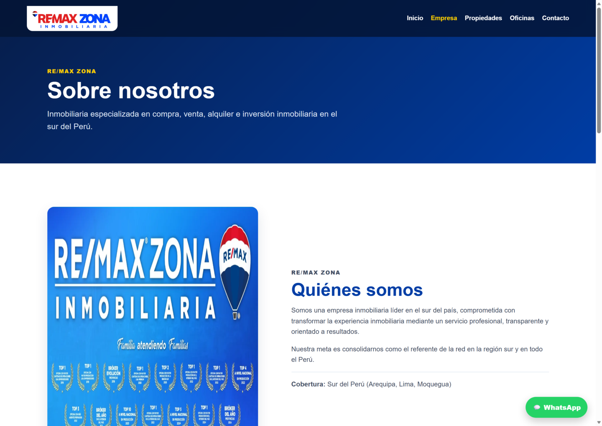
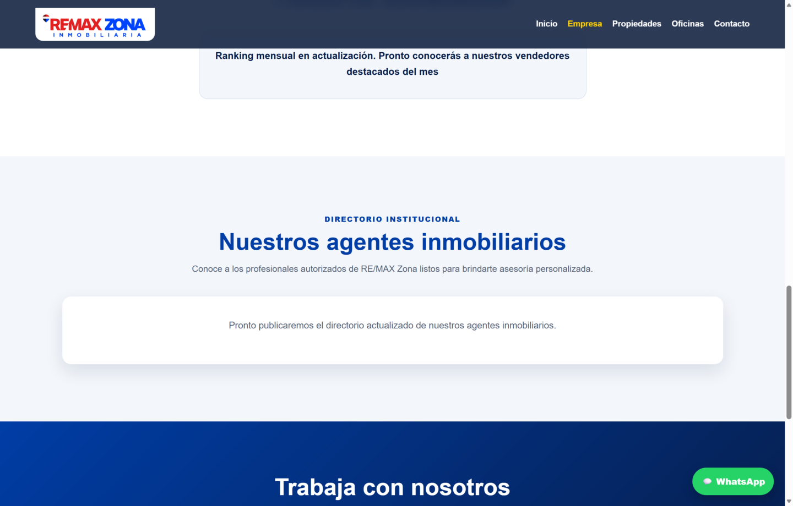
2.4 Catálogo General de Propiedades /propiedades
Permite consultar todas las propiedades activas mediante una barra de búsqueda reactiva que actualiza los resultados instantáneamente sin recargar la página:
| Control de filtro | Funcionamiento |
|---|---|
| Buscar propiedad o zona | Filtra en tiempo real por coincidencias en el nombre del proyecto/inmueble o en su ubicación (ej. Cayma, Miraflores, casa). |
| Ubicación | Lista desplegable dinámica construida a partir de las ubicaciones existentes entre las propiedades activas. |
| Moneda | Filtra por Todas las monedas, Soles (S/) o Dólares ($). |
| Limpiar filtros | Aparece automáticamente cuando existe algún criterio aplicado para restablecer el catálogo completo. |
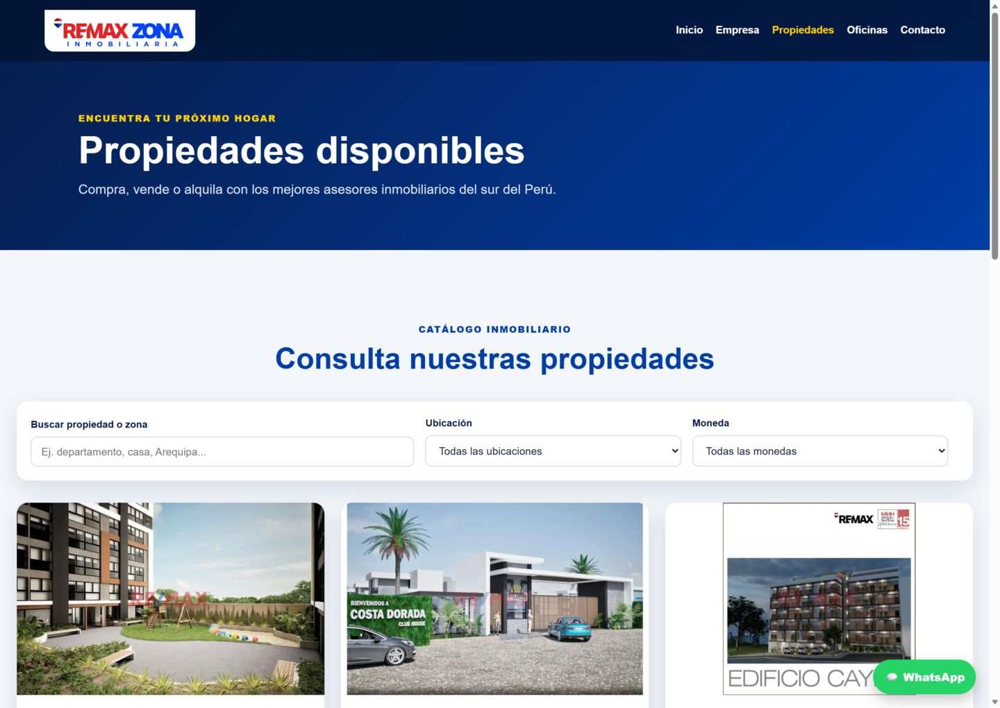
2.5 Oficinas y Catálogo por Sede /oficinas
Presenta las cuatro sedes oficiales de RE/MAX Zona: Arequipa, Lima, Moquegua y Puno. Cada tarjeta muestra su fotografía representativa (o un bloque institucional neutro si aún no tiene foto), los canales de contacto específicos de la sede (dirección, teléfono, WhatsApp, correo, horario y enlace a Google Maps) y el botón Ver propiedades.
Al pulsar Ver propiedades en cualquier sede se accede a su catálogo dedicado
(/oficinas/arequipa, /oficinas/lima, /oficinas/moquegua o /oficinas/puno),
que incluye el resumen de contacto de esa oficina, botones de retorno rápido (← Todas las oficinas y
Ver catálogo general) y los mismos filtros en tiempo real aplicados solo a los inmuebles de esa sede.
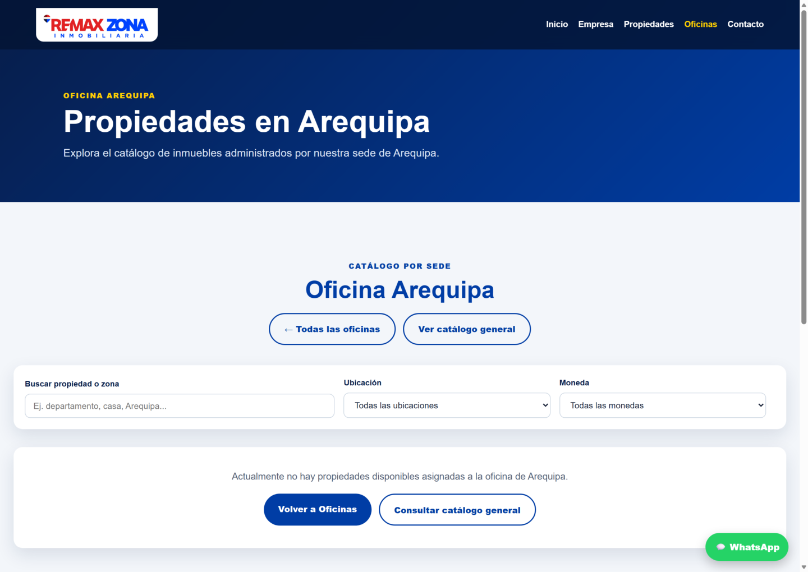
2.6 Página de Contacto /contacto
Consolida en tarjetas claras los medios oficiales de atención administrados globalmente: Teléfono y WhatsApp, Correo electrónico, Dirección y cobertura y Horario de atención, además del bloque de postulación por WhatsApp.
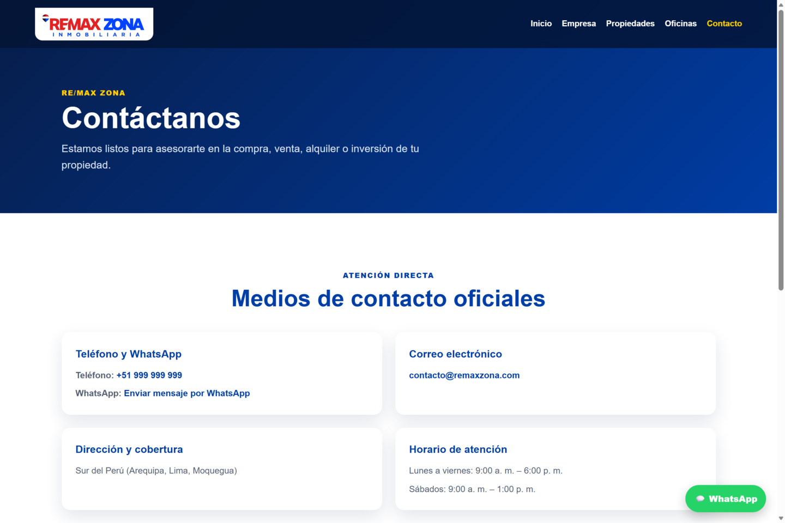
Capítulo 3
Acceso, Seguridad y Roles del Panel Administrativo
3.1 Inicio de sesión y Verificación en Dos Pasos (2FA) /admin/login
- Abra en su navegador la ruta
/admin/login. - Ingrese su Correo electrónico corporativo y su Contraseña.
- Pulse Iniciar sesión.
- Si su cuenta tiene 2FA activado, el sistema le solicitará el código temporal de 6 dígitos de su aplicación autenticadora (Google Authenticator, Microsoft Authenticator o Authy). En caso de no contar con su teléfono, pulse Usar un código de recuperación e ingrese uno de sus códigos de emergencia de un solo uso.
- Tras validarse, ingresará automáticamente al módulo Gestión de Propiedades (
/admin/propiedades).
Cuentas suspendidas: Las cuentas desactivadas por el Administrador no pueden iniciar sesión y muestran el aviso «Esta cuenta se encuentra desactivada. Contacta al administrador.»
Diagrama 2. Proceso de autenticación segura y verificación en dos factores (2FA).
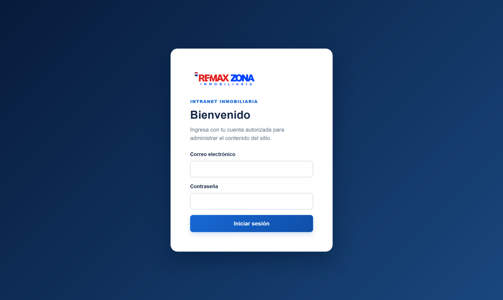
3.2 Roles y Matriz de Permisos
El panel separa estrictamente las responsabilidades entre dos roles. Al navegar, el menú lateral muestra
únicamente los módulos autorizados para el usuario autenticado, y las rutas protegidas devuelven error HTTP
403 ante accesos no autorizados.
| Módulo del Panel | Ruta URL | ADMINISTRADOR | MARKETING | Operaciones |
|---|---|---|---|---|
| Propiedades | /admin/propiedades |
Permitido | Permitido | Crear, editar, destacar, eliminar |
| Agentes | /admin/agentes |
Permitido | Permitido | Crear, editar, activar/inactivar, eliminar |
| Ranking Mensual | /admin/ranking-actual |
Permitido | Permitido | Registrar 3 puestos y publicar (días 1–3) |
| Portada Principal | /admin/portada |
Permitido | Restringido | Cambiar fotografía Hero de Inicio |
| Oficinas | /admin/oficinas |
Permitido | Restringido | Editar datos y foto de las 4 sedes |
| Historial de Rankings | /admin/historial-rankings |
Permitido | Restringido | Consulta histórica en solo lectura |
| Contacto Global | /admin/configuracion-contacto |
Permitido | Restringido | Teléfonos, WhatsApp, correos y horarios |
| Usuarios y Roles | /admin/usuarios |
Permitido | Restringido | Crear, editar y suspender cuentas |
| Mi Cuenta y Seguridad | /settings/profile |
Permitido | Permitido | Perfil, Modo Claro/Oscuro, Clave y 2FA |
Anatomía del espacio de trabajo
- Menú lateral izquierdo: Incluye acceso rápido «⌂ Ver sitio público» (nueva pestaña), lista de módulos según su rol y botón inferior «↪ Cerrar sesión».
- Barra superior (Topbar): Muestra el indicador rápido del tema visual (
☀ Claroo🌙 Oscuro), la insignia de su rol y el acceso directo a su perfil con su nombre completo.
Capítulo 4 • Módulos Compartidos
Módulos Operativos (Administrador y Marketing)
4.1 Gestión de Propiedades /admin/propiedades ADMIN MARKETING
Este módulo opera en formato maestro-detalle: el listado filtrable se muestra a la izquierda y el formulario de creación/edición se despliega en el panel derecho, permitiendo trabajar sin perder visibilidad del inventario.
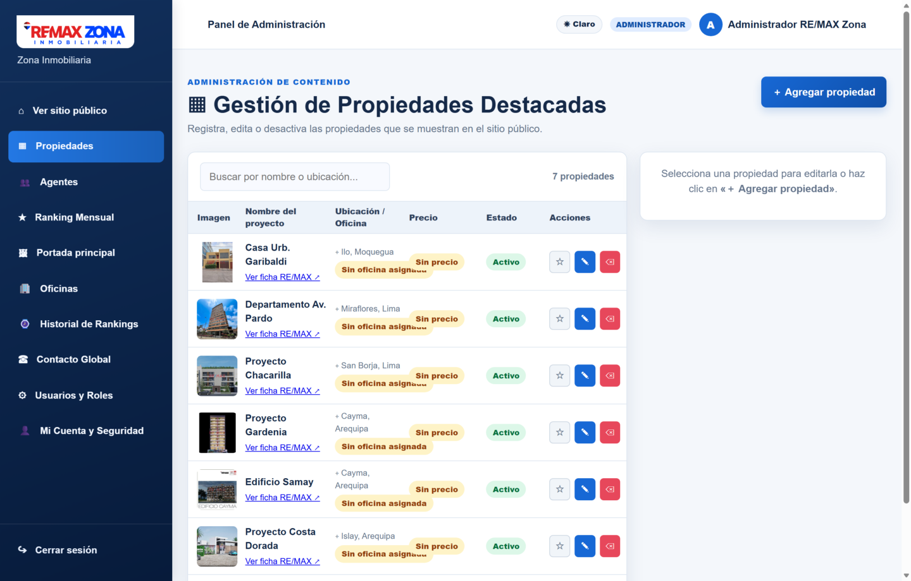
Cómo registrar o editar una propiedad
- Para crear una nueva propiedad haga clic en ＋ Agregar propiedad. Para modificar una existente, haga clic en el botón azul ✎ de su fila.
- Complete los campos del editor lateral según el diccionario de campos inferior.
- Verifique la vista previa de fotografía antes de guardar (puede pulsar «Quitar selección» si eligió un archivo equivocado).
- Marque o desmarque «Visible en el sitio público» según desee publicarla de inmediato o dejarla inactiva.
- Haga clic en Guardar cambios. El sistema optimizará la imagen a formato WebP (máx. 1200 px de ancho) automáticamente.
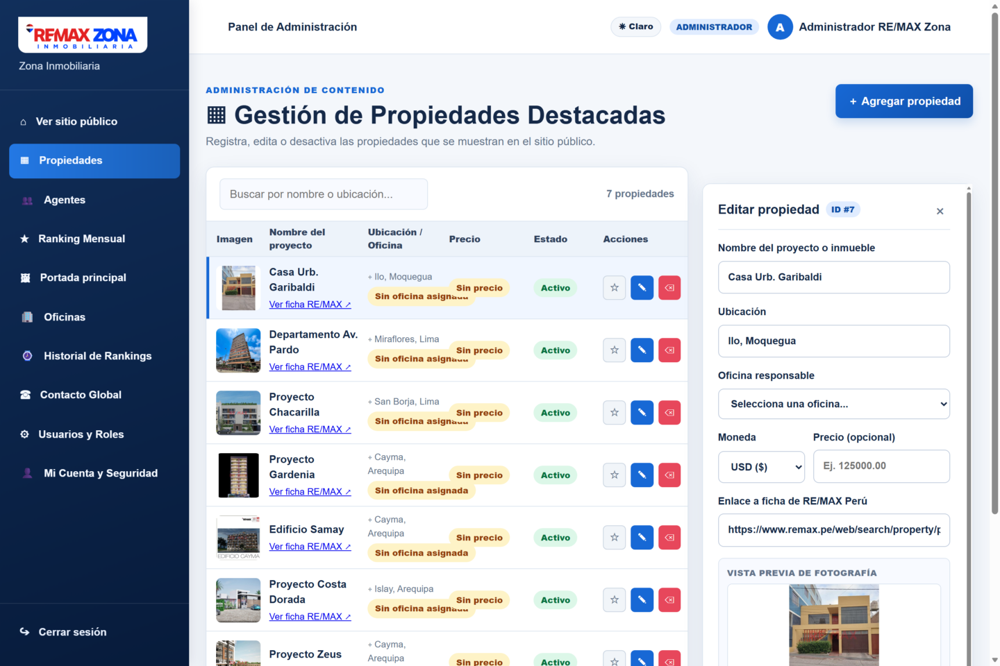
Diccionario de campos y validaciones — Propiedades
| Campo | Exigencia | Reglas de validación y comportamiento |
|---|---|---|
| Nombre del proyecto o inmueble | Obligatorio | Texto de hasta 140 caracteres. Se muestra como título principal de la tarjeta pública. |
| Ubicación | Obligatorio | Texto de hasta 140 caracteres (ej. Cayma, Arequipa). Alimenta el filtro público de ubicaciones. |
| Oficina responsable | Obligatorio | Debe seleccionarse una de las 4 sedes: Arequipa, Lima, Moquegua o Puno. Define en qué catálogo de sede aparecerá. |
| Moneda y Precio | Opcional | Si se ingresa un precio numérico (≥ 0), la moneda (USD $ o PEN S/) pasa a ser obligatoria. Si queda vacío, se muestra sin precio. |
| Enlace RE/MAX Perú | Obligatorio | URL válida que inicie con http:// o https:// (máx. 500 caracteres). |
| Fotografía | Oblig. al crear | Opcional al editar (dejar vacío conserva la actual). Formatos: JPG, JPEG, PNG o WEBP, máx. 4 MB. |
| Visible en el sitio público | Casilla | Activo la muestra en /propiedades y su sede; Inactivo la oculta del público sin borrarla. |
Acciones rápidas en la tabla
- Estrella (
☆/★): Marca o quita la propiedad como Destacada. Solo las propiedades Activas y con estrella dorada (★) aparecen en la página de Inicio (/). - Lápiz (
✎): Abre el editor con el ID y datos de la propiedad seleccionada. - Eliminar (
⌫): Solicita confirmación explícita y elimina el registro junto con su fotografía almacenada.
4.2 Gestión de Agentes /admin/agentes ADMIN MARKETING
Administra el directorio institucional de agentes que los visitantes consultan en la sección Empresa
(/empresa). Incluye buscador por nombres, apellidos, celular, WhatsApp o correo.
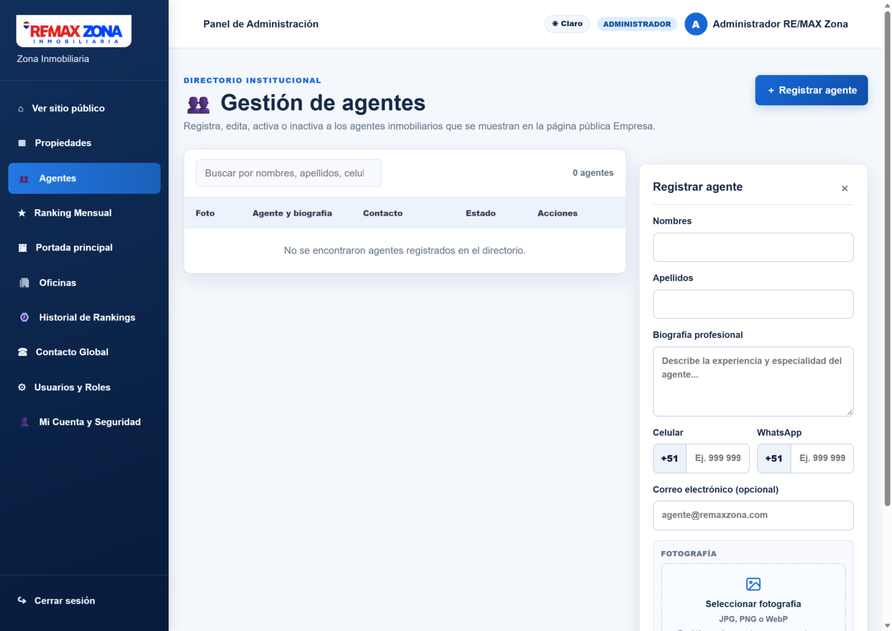
Cómo registrar un agente
- Haga clic en ＋ Registrar agente.
- Ingrese Nombres (máx. 100), Apellidos (máx. 100) y Biografía profesional (máx. 1000 caracteres).
- Complete Celular y WhatsApp (el prefijo
+51se añade y normaliza automáticamente) y, opcionalmente, el Correo electrónico. - Cargue la Fotografía (JPG, PNG o WebP hasta 4 MB; optimizada automáticamente a WebP 600 px) usando cualquiera de los tres métodos soportados:
- Hacer clic en el recuadro «Seleccionar fotografía».
- Arrastrar y soltar el archivo de imagen sobre el recuadro.
- Pegar una imagen directamente desde el portapapeles con Ctrl + V.
- Verifique la casilla «Activo (visible en la página pública Empresa)» y pulse Registrar agente.
4.3 Gestión del Ranking Mensual /admin/ranking-actual ADMIN MARKETING
Controla el podio de los 3 vendedores estrella del mes que se exhiben públicamente en
Inicio y Empresa. Este módulo incorpora reglas automáticas basadas en el
calendario de Perú (America/Lima) para garantizar la transparencia e integridad histórica.
Diagrama 3. Ciclo de vida y bloqueo automático del Ranking Mensual según fecha calendario (Hora Perú).
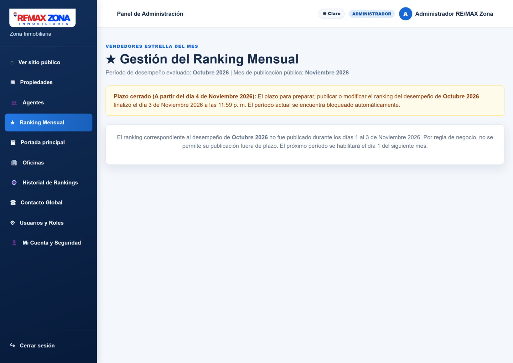
Procedimiento operativo (durante los días 1, 2 y 3 del mes)
- Verifique en el encabezado el Período de desempeño evaluado (corresponde al mes calendario anterior) y el Mes de publicación pública (mes actual).
- En cada una de las tres tarjetas fijas (1.er Puesto, 2.º Puesto y 3.er Puesto), registre de forma independiente:
- Nombres y Apellidos (mínimo 2 caracteres cada uno).
- Número de celular (con prefijo
+51automático). - Fotografía especial para el ranking (JPG, PNG o WebP, máx. 4 MB).
- Pulse Guardar puesto en cada tarjeta. El sistema asignará un código interno automático (
PART-...) y cambiará la etiqueta de Pendiente a Registrado. - Cuando el contador indique 3 / 3 puestos completados, haga clic en Publicar Ranking en el Sitio Público.
• Aviso de homónimo: Si dos puestos comparten exactamente los mismos nombres y apellidos (con distinto celular), se muestra una alerta informativa no bloqueante para su verificación.
• Inmutabilidad: Una vez finalizado el día 3 a las 11:59 p. m., ningún usuario puede modificar ni eliminar un ranking cerrado o vencido.
Capítulo 5 • Administración General
Módulos Exclusivos del Administrador
Los siguientes cinco módulos son accesibles únicamente para cuentas con rol ADMINISTRADOR.
5.1 Portada Principal /admin/portada
Permite renovar la fotografía panorámica (Hero) visible al ingresar a la página de Inicio (/).
- Revise el nombre del archivo activo y la vista previa de la portada publicada actualmente.
- Seleccione una nueva fotografía en formato JPG, JPEG, PNG o WEBP (máximo 4 MB).
- Confirme la nueva vista previa (o pulse «Quitar selección» para descartarla) y haga clic en Guardar fotografía de portada.
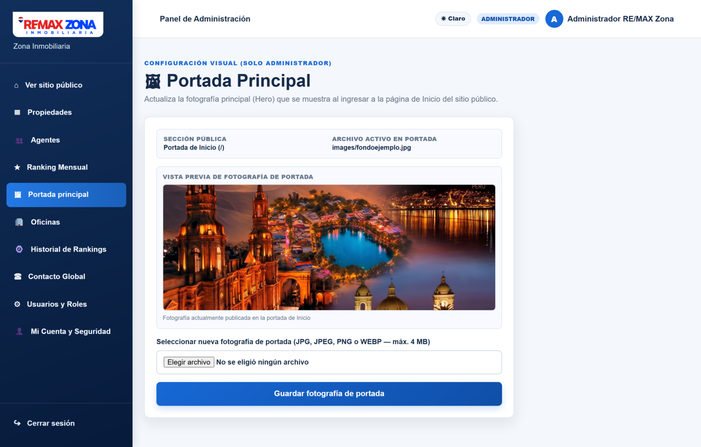
5.2 Gestión de Oficinas /admin/oficinas
Permite administrar la información individual y fotografía de las cuatro sedes oficiales establecidas:
Arequipa (/oficinas/arequipa), Lima (/oficinas/lima),
Moquegua (/oficinas/moquegua) y Puno (/oficinas/puno).
- En el listado izquierdo, pulse ✎ sobre la sede que desea actualizar.
- Edite los campos necesarios: Nombre de la sede (obligatorio), Dirección física, Teléfono (
+51), WhatsApp (solo dígitos, 8 a 20 dígitos), Correo electrónico, Horario de atención, Enlace de Google Maps (http://ohttps://) y Fotografía representativa (opcional, máx. 4 MB, optimizada a WebP 1000 px). - Pulse Guardar cambios de la oficina para reflejar los cambios en
/oficinasy en el catálogo de esa sede.
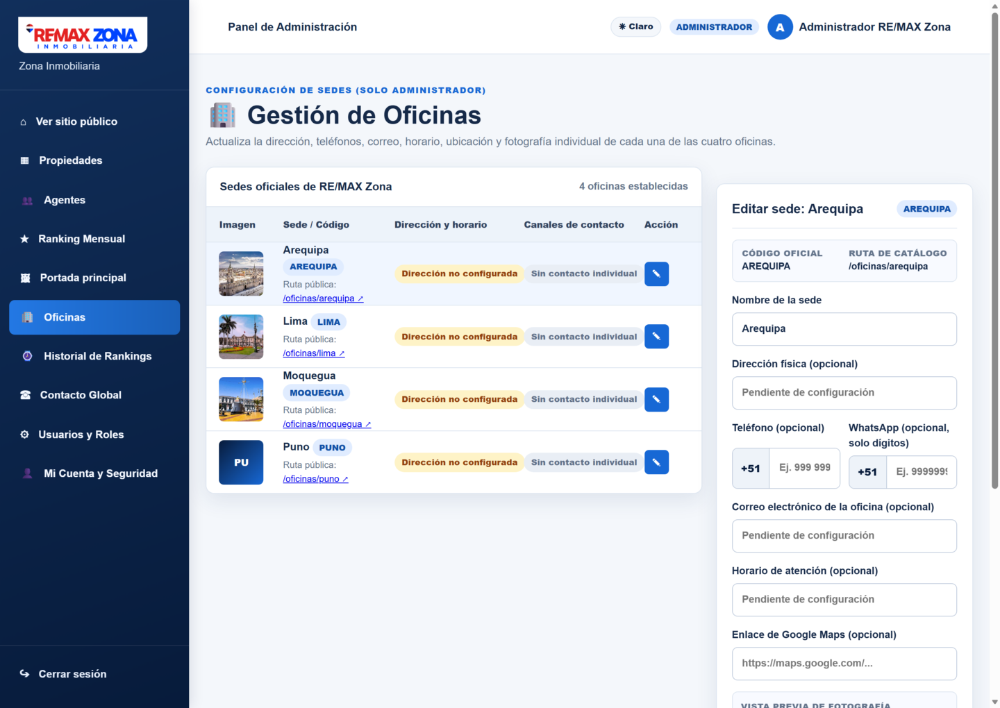
5.3 Historial de Rankings Mensuales /admin/historial-rankings
Archivo histórico en modo de solo lectura que conserva permanentemente las fotografías, nombres y
celulares exactos de todos los rankings mensuales con estado PUBLICADO o CERRADO.
- Seleccione el Mes de desempeño y el Año de desempeño (desde 2024 hasta el año actual) en los selectores superiores.
- Alternativamente, haga clic en cualquiera de los accesos directos del bloque inferior «Períodos registrados en el historial».
- Consulte el podio completo, la fecha exacta de publicación y la etiqueta de estado
SOLO LECTURA.
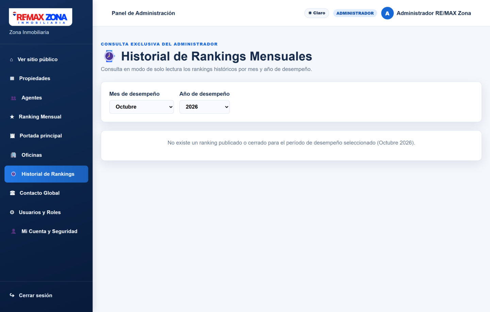
5.4 Información Global de Contacto /admin/configuracion-contacto
Actualiza de forma centralizada los datos corporativos que se replican en el pie de página de todo el sitio,
el botón flotante de WhatsApp, la página /contacto, los canales generales de /oficinas
y los botones «Postular por WhatsApp».
| Campo | Exigencia | Impacto en el Sitio Público |
|---|---|---|
| Nombre comercial de la empresa | Obligatorio | Títulos SEO, encabezado de portada, pie de página y sección Empresa. |
| Teléfono visible en pie de página | Obligatorio | Enlace telefónico en Footer, Oficinas y Contacto (prefijo +51 automático). |
| WhatsApp general | Obligatorio | Botón flotante global de WhatsApp, Footer, Propiedades, Oficinas y Contacto. |
| WhatsApp «Postular por WhatsApp» | Obligatorio | Botón de reclutamiento en la sección Trabaja con nosotros (Inicio, Empresa y Contacto). |
| Correo electrónico de contacto | Obligatorio | Enlace mailto: en Footer, Oficinas, Contacto y datos estructurados SEO. |
| Dirección o referencia | Opcional | Cobertura o dirección principal mostrada en Footer, Empresa, Oficinas y Contacto. |
| Horarios (Lun–Vie y Sábados) | Obligatorio | Bloques de horario de atención en Footer, Oficinas y Contacto. |
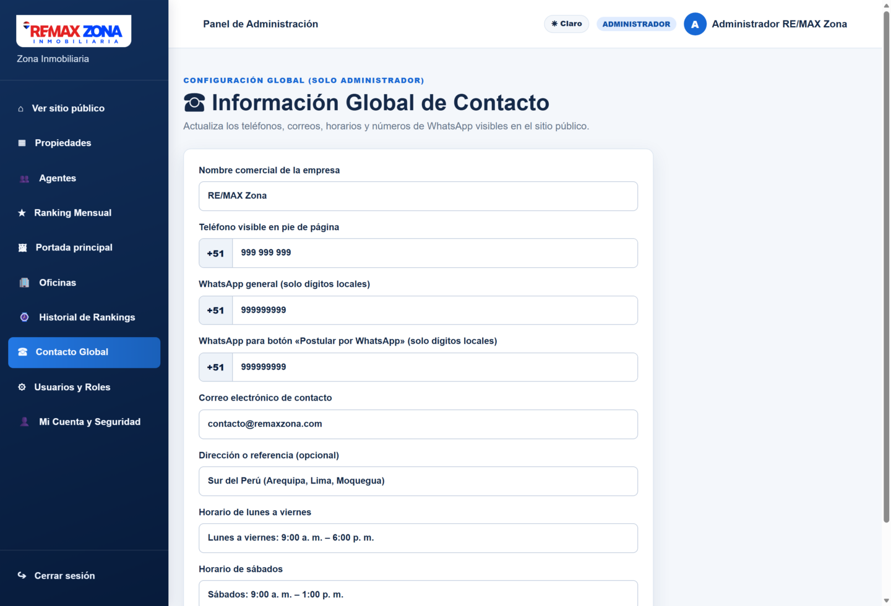
5.5 Gestión de Usuarios y Roles /admin/usuarios
Permite administrar quién tiene acceso al panel administrativo y con qué nivel de privilegios.
- Para crear una cuenta nueva, pulse ＋ Nuevo usuario. Para modificar una existente, pulse ✎ en su fila.
- Complete Nombre completo, Correo electrónico (único en el sistema) y seleccione el Rol del usuario (
MARKETINGoADMINISTRADOR). - Ingrese una Contraseña de al menos 8 caracteres (al editar un usuario, deje este campo en blanco para conservar su contraseña actual).
- Use la casilla «Cuenta activa» para habilitar o suspender el acceso inmediatamente, y pulse Crear usuario / Actualizar usuario.
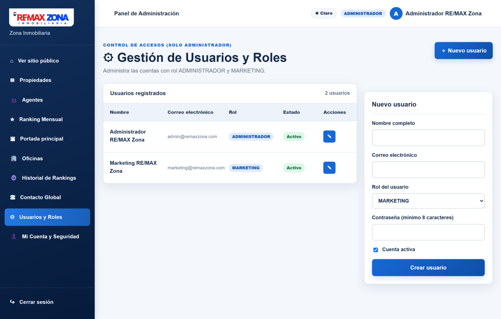
Capítulo 6 • Preferencias Personales
Mi Cuenta, Apariencia y Seguridad Personal
Accesible para todos los usuarios autenticados (ADMIN y MARKETING) desde el menú lateral «👤 Mi Cuenta y Seguridad» o haciendo clic en su nombre en la esquina superior derecha. Se organiza en tres pestañas:
6.1 Perfil de Usuario /settings/profile
- Muestra en solo lectura su Rol asignado y el Estado de la cuenta.
- Permite modificar su Nombre completo (mínimo 3 caracteres) y su Correo electrónico de acceso.
- Confirmación por seguridad: Si cambia su dirección de correo electrónico, deberá ingresar obligatoriamente su Contraseña actual antes de pulsar Guardar cambios del perfil.
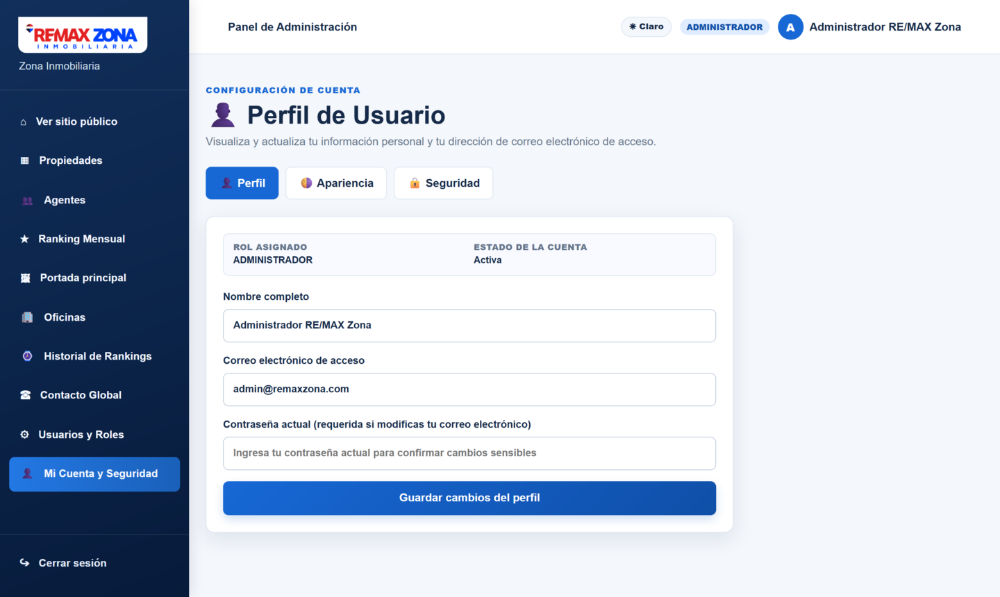
6.2 Apariencia del Panel (Modo Claro y Modo Oscuro) /settings/appearance
Cada usuario puede personalizar el tema visual de su panel administrativo entre Modo claro (☀) y Modo oscuro (🌙). La preferencia se almacena directamente en su cuenta de usuario y se aplica automáticamente en todos sus inicios de sesión futuros sin afectar a otros usuarios.
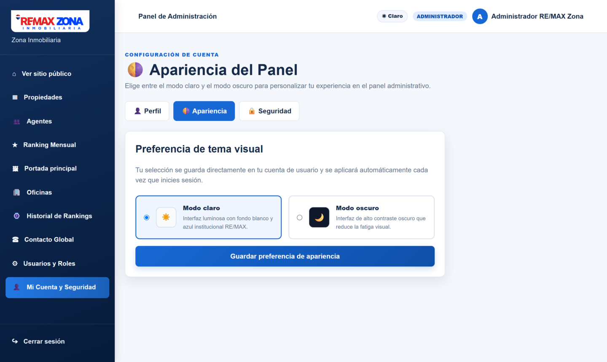
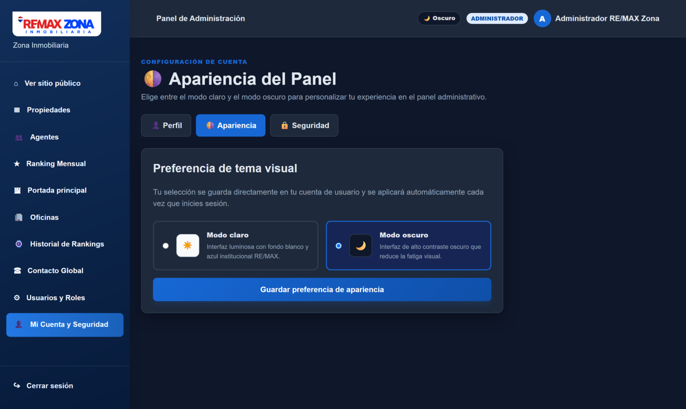
6.3 Seguridad: Contraseña y Autenticación de Dos Factores (2FA) /settings/security
/settings/security, el sistema puede solicitarle confirmar su contraseña actual en una pantalla intermedia antes de mostrar las opciones sensibles de seguridad.
A. Actualizar contraseña
- En la tarjeta izquierda «Actualizar contraseña», ingrese su Contraseña actual.
- Escriba la Nueva contraseña (mínimo 8 caracteres) y repítala en Confirmar nueva contraseña.
- Pulse Actualizar contraseña.
B. Activar y administrar la Autenticación de Dos Factores (2FA)
- Instale en su teléfono una aplicación autenticadora TOTP: Google Authenticator, Microsoft Authenticator o Authy.
- En la tarjeta derecha, escriba su contraseña actual y haga clic en Habilitar autenticación de dos factores (2FA).
- Paso 1: Escanee el código QR que aparecerá en pantalla (o copie la clave secreta manual en su aplicación).
- Paso 2: Ingrese el código de 6 dígitos generado por la aplicación y pulse Confirmar y activar 2FA.
- Respalde sus códigos de recuperación: Copie y guarde en un lugar seguro los códigos de emergencia mostrados; cada código permite un acceso único si pierde su teléfono.
Cuando 2FA se encuentra activo, puede pulsar Ver códigos de recuperación, Regenerar códigos de recuperación (requiere contraseña actual) o Desactivar 2FA (requiere contraseña actual).
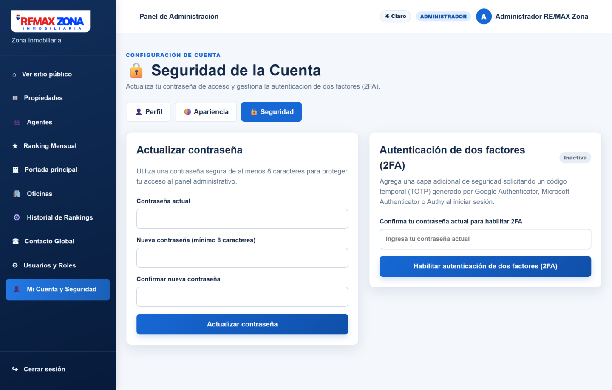
Capítulo 7 • Soporte Operativo
Preguntas Frecuentes y Solución de Problemas
| Situación o mensaje en pantalla | Causa más probable | Solución recomendada |
|---|---|---|
| «Demasiados intentos. Intenta nuevamente en X segundos» | Se superó el límite de 5 intentos fallidos de acceso o código 2FA. | Espere los segundos indicados (máx. 60 s), verifique mayúsculas/minúsculas o el reloj de su teléfono (para 2FA) y vuelva a intentarlo. |
| Una propiedad activa no aparece en la página de Inicio | La portada solo muestra propiedades que estén Activas y además marcadas como Destacadas. | En Propiedades, haga clic en la estrella (☆) de esa fila para activarla en color dorado (★). |
| Una propiedad no figura dentro de su oficina (ej. Puno o Arequipa) | El campo Oficina responsable no fue asignado o la propiedad está inactiva. | Edite la propiedad (✎), seleccione la sede correcta en Oficina responsable y verifique que Visible en el sitio público esté marcado. |
| No puedo guardar ni publicar el Ranking Mensual | El reloj de Perú ya pasó del día 3 a las 23:59, o faltan puestos por completar, o existe un celular repetido. | Solo se edita los días 1 al 3 del mes. Complete los 3 puestos con celulares distintos y pulse Publicar Ranking en el Sitio Público. |
| Error al subir una fotografía (formato o tamaño) | El archivo excede los 4 MB o no es JPG, JPEG, PNG o WEBP (ej. HEIC o PDF). | Convierta la imagen a JPG o PNG y reduzca su peso por debajo de 4 MB antes de subirla nuevamente. |
| No tengo acceso a mi teléfono con el código 2FA | Dispositivo extraviado, descargado o reemplazado. | En la pantalla de verificación 2FA pulse «Usar un código de recuperación» e ingrese uno de los códigos guardados. Si tampoco los posee, contacte al Administrador técnico. |
| No visualizo Portada, Oficinas, Historial, Contacto o Usuarios | Su cuenta posee rol MARKETING. |
Esos cinco módulos son exclusivos del rol ADMINISTRADOR. Solicite la gestión al Administrador o un cambio de rol si corresponde. |
Capítulo 8 • Referencia
Glosario de Términos y Anexo Técnico
8.1 Glosario de términos
| Término | Definición práctica en RE/MAX Zona |
|---|---|
| 2FA / TOTP | Autenticación de dos factores basada en contraseñas temporales de 6 dígitos que rotan cada 30 segundos en una app autenticadora. |
| Propiedad Destacada | Inmueble activo marcado con estrella (★) para exhibirse en la sección principal de la página de Inicio. |
| Hero / Portada | Imagen panorámica de cabecera a pantalla completa ubicada al inicio de la página principal (/). |
| Slug | Identificador amigable en la dirección URL de cada oficina (arequipa, lima, moquegua, puno). |
| Snapshot histórico | Copia independiente de nombre, celular y fotografía que el Ranking Mensual congela para cada período, preservando intacto el historial aunque cambien otros registros. |
| WebP | Formato moderno de compresión de imágenes generado automáticamente por el sistema para acelerar la carga web manteniendo alta calidad visual. |
8.2 Anexo de referencia para mantenimiento técnico
Resumen de recursos de monitoreo, respaldo y optimización disponibles para el personal de TI en el servidor:
| Recurso / Comando | Finalidad operativa |
|---|---|
GET /salud |
Endpoint JSON (Cache-Control: no-store) para monitoreo de disponibilidad: verifica aplicación, MySQL y escritura en almacenamiento sin exponer credenciales. |
GET /sitemap.xml |
Mapa del sitio XML generado dinámicamente para indexación SEO (incluye las rutas públicas y las 4 sedes). |
php artisan sistema:verificar-salud |
Comprobación programada cada 5 minutos; registra incidencias en storage/logs/disponibilidad.log. |
php artisan sistema:respaldar |
Genera respaldo privado de base de datos, multimedia.zip y manifiesto.json con hashes SHA-256 en storage/app/private/respaldos/ (programado diariamente 02:30). |
php artisan sistema:verificar-respaldo {dir} |
Valida de forma no destructiva la integridad SHA-256 de una carpeta de respaldo antes de cualquier restauración. |
php artisan sistema:optimizar-imagenes |
Genera o actualiza por lotes las versiones WebP de todas las imágenes del sitio y catálogo conservando intactos los originales. |
MAN-USR-RZ-001 • Versión 1.0 (Noviembre 2026). Para consultas sobre accesos o permisos, comuníquese con el Administrador del sistema.